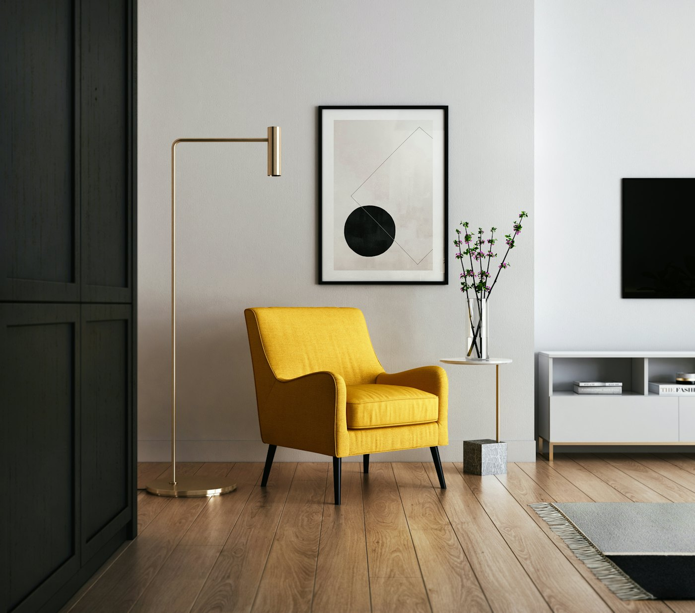

Работаю в КПТ: смотрим, какие мысли и привычки держат проблему, и шаг за шагом их меняем. Без бесконечных разговоров о детстве, с понятными целями и домашними заданиями.
Записаться на первую встречуонлайн или очноЕсли вашего запроса нет в списке — напишите, я честно скажу, смогу ли помочь, или посоветую коллегу.

Оплата после сессии. Отмена бесплатно, если предупредить за сутки.
| Первая встреча | 50 минут, онлайн или очно | 3 000 ₽ |
| Сессия | 50 минут | 4 500 ₽ |
| Пакет из 5 сессий | действует 2 месяца | 20 000 ₽ |
Да. То, что вы рассказываете, остаётся между нами. Исключение одно, и оно прописано в законе: угроза жизни.
Я не ставлю диагнозы и не назначаю лекарства. Если увижу, что нужна помощь врача, скажу об этом прямо и подскажу, к кому обратиться.
Для КПТ — да, исследования показывают сопоставимый результат. Нужны наушники и место, где вас не услышат.
Зависит от запроса. С бессонницей часто хватает 6–8, с тревогой обычно 12–20.